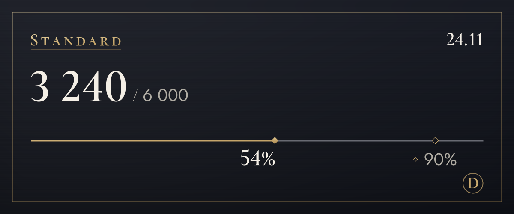

Plany
Zacznij za darmo i zmień plan, gdy będziesz potrzebować więcej.
Trwa okres testowy, więc nie przyjmujemy jeszcze płatności. Gdy płatności ruszą, wykupisz i anulujesz subskrypcję na tej stronie. W okresie testowym tłumaczenie nie zatrzymuje się po przekroczeniu limitu.
Free
0 $
Najpierw wypróbuj (wyświetlenie oryginału się nie liczy)
100 tłumaczeń miesięcznie (około 3 dziennie), 4 tony przez pierwsze 14 dni, 3 słowa w słowniczku
Z tego samego limitu: tekst na obrazach (zwykle 4 za obraz) i tłumaczenie na obrazach (zwykle 6)
Jak zacząćLite
4,99 $/mies.
Ton wybierasz dla każdego serwera: na ty z przyjaciółmi, per pan/pani w nowym miejscu
1 200 tłumaczeń miesięcznie (około 40 dziennie), 4 tony, po wykorzystaniu limitu jeszcze 20 dziennie, 10 słów w słowniczku
Z tego samego limitu: tekst na obrazach (zwykle 4 za obraz) i tłumaczenie na obrazach (zwykle 6)
Wybierz (Lite)Standard
Polecany
9,99 $/mies.
Z zapasem na codzienne rozmowy
6 000 tłumaczeń miesięcznie (około 200 dziennie), 4 tony, po wykorzystaniu limitu jeszcze 20 dziennie, 30 słów w słowniczku, 20 wyjaśnień miesięcznie
Z tego samego limitu: tekst na obrazach (zwykle 4 za obraz) i tłumaczenie na obrazach (zwykle 6)
Wybierz (Standard)Plus
14,99 $/mies.
Najwięcej tłumaczeń dla tych, którzy dużo korzystają
20 000 tłumaczeń miesięcznie (około 667 dziennie), 4 tony, po wykorzystaniu limitu jeszcze 20 dziennie, 100 słów w słowniczku, 60 wyjaśnień miesięcznie
Z tego samego limitu: tekst na obrazach (zwykle 4 za obraz) i tłumaczenie na obrazach (zwykle 6)
Wybierz (Plus)
- Ceny są w dolarach amerykańskich. Podatek obowiązujący w twoim kraju zostanie doliczony przy płatności.
- Płatne plany to miesięczne subskrypcje odnawiane automatycznie. Możesz je anulować w każdej chwili, a kolejna płatność nie zostanie pobrana.
- Plan Free nigdy sam nie zamienia się w płatny.
- Prawo odstąpienia od umowy jest ograniczone w zakresie już wykorzystanej części, a plan Free możesz najpierw wypróbować.
- Tłumaczenia wykonuje AI (Claude od Anthropic). Może się mylić, więc w ważnych sprawach sprawdź też oryginał.
- Szczegóły znajdziesz w dokumentach: Regulamin i Zasady zwrotu środków.
Jak liczymy tłumaczenia
Limity planów liczone są w tłumaczeniach. Jedna wiadomość przetłumaczona na jeden język to 1 tłumaczenie.
- Tekst
- 1 za wiadomośćDługie wiadomości liczą się o 1 więcej za każde 200 znaków po koreańsku, chińsku lub japońsku albo za każde 500 znaków w innych językach. Wiadomości, w których nie ma nic do przetłumaczenia, nie są liczone.
- Prawy przycisk myszy
- 1 za wiadomośćTak samo jak tekst. Podgląd oryginału i wyświetlenie w innym języku nie są liczone.
- Tekst na obrazach
- Zwykle 4 za obraz3 za odczytanie obrazu plus tłumaczenie odczytanego tekstu. Obrazy bez tekstu nie są liczone, a z jednej wiadomości odczytuje się do 4 obrazów.
- Tłumaczenie na obrazach
- 6 za jeden blok tekstu3 za odczytanie, 1 za tłumaczenie i 2 za narysowanie. Każdy kolejny blok dodaje co najmniej 1 za swoje tłumaczenie, a każde 16 bloków liczy się jako jeden obraz. Powyżej 16 bloków najpierw widzisz koszt, a tłumaczenie zostaje nałożone po twoim potwierdzeniu (maksymalnie 128 bloków). Zmiana czcionki nie jest liczona.
- Wiadomości głosowe Wkrótce
- 1 za sekundę dźwiękuPrzygotowujemy zamianę na tekst i tłumaczenie wiadomości głosowych wysłanych z aplikacji na telefon. Po uruchomieniu dojdzie do tego tłumaczenie tego, co zostało powiedziane, a wiadomości bez mowy nie będą liczone.
- Dzienny limit
- 200 obrazówLimit jest liczony dla każdej osoby osobno i jest taki sam w każdym planie, żeby masowe automatyczne użycie nie mogło zatrzymać tłumaczeń wszystkim innym.
- Kto płaci
- Tłumaczenia otwarte ikonami pod obrazami lub prawym przyciskiem zużywają limit osoby, która nacisnęła, a nie tej, która opublikowała wiadomość.
Na przykład
Przy 200 tłumaczeniach dziennie
Standard w przeliczeniu na dzień
Wystarczy, żeby przetłumaczyć kilka obrazów i dalej rozmawiać cały wieczór.
Przy 40 tłumaczeniach dziennie
Lite w przeliczeniu na dzień
Wystarczy na godzinę rozmowy ze znajomymi.

/tlumacz zuzycie.Najczęstsze pytania
Kiedy ruszą płatności?
Trwa okres testowy, więc nie przyjmujemy płatności i wszyscy korzystają z planu Free. Płatności ruszą, gdy zakończymy rejestrację działalności i podłączymy operatora płatności. Datę ogłosimy w nowościach na serwerze pomocy technicznej i na tej stronie. W Korei płaci się w wonach, wszędzie indziej w dolarach amerykańskich.
Jak anulować subskrypcję?
Gdy płatności ruszą, subskrypcję anulujesz na stronie planów tej witryny, tam gdzie ją wykupujesz. Po anulowaniu kolejna płatność nie zostanie pobrana, a plan zachowasz do końca opłaconego okresu. Ekran zarządzania planem w panelu ustawień bota też prowadzi tutaj.
Jak działają zwroty?
Za pierwszą płatność możesz dostać pełny zwrot w ciągu 7 dni. Zwracamy pieniądze także w razie awarii usługi lub gdy usługa różni się od opisu na tej stronie. Resztę zasad znajdziesz w dokumencie Zasady zwrotu środków.
Czy obrazy są zapisywane?
Bot ich nie zapisuje. Obrazy trafiają do Anthropic, żeby odczytać tekst, a ty widzisz tylko wynik. Nic nie jest wysyłane, dopóki nie naciśniesz przycisku. Odczytany tekst też nie jest przechowywany; tylko tłumaczenie podlega zasadzie pamięci podręcznej tłumaczeń (30 dni). Obraz, na który nakładasz tłumaczenie przyciskiem „Nałóż na obraz”, zostaje w pamięci przez 15 minut razem z odczytanym tekstem i tłumaczeniem, żeby po zmianie czcionki można go było od razu narysować na nowo.
Kto tworzy tłumaczenia?
Tłumaczenia wykonuje AI (Claude od Anthropic). Ten sam model AI odczytuje tekst z obrazów. Tłumaczenia mogą zawierać błędy, więc w ważnych sprawach sprawdź też oryginał. Obrazy z nałożonym tłumaczeniem mają w opisie (tekście alternatywnym) i w notce pod wynikiem informację, że to tłumaczenie AI.